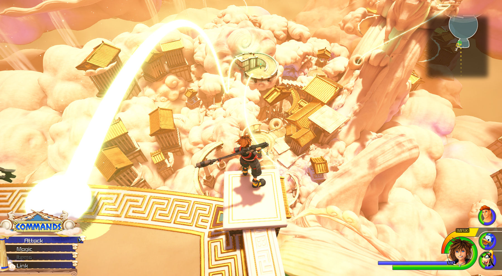

Mundos visitables

Mundos visitables
El universo de Kingdom Hearts es una colección de diversos mundos por los cuales el jugador avanza en el
juego. Hay 13 mundos a los que se pueden acceder durante el juego, y uno que sólo es mostrado en escenas
cinematográficas (el Castillo Disney). Algunos personajes mencionan ciertos mundos, pero éstos no son
accesibles porque han sido destruidos por los Sincorazón, unos seres de la oscuridad. Diez de los mundos
están basados en el mundo de Disney, principalmente de los clásicos animados, y los otros cuatro fueron
creados por Square especialmente para el juego.
Cada mundo varía en apariencia y ubicación, dependiendo en el mundo de Disney en que está basado.
Los gráficos del juego del mundo y los personajes se asemejan al estilo artístico de los ambientes y
personajes de su película de Disney respectiva. Cada mundo de Disney está habitado por personajes de su
respectiva película; Hércules y Philoctetes viven en el Olimpo, y Aladdín, la Princesa Jasmín y Jafar
habitan Ágrabah. Cada mundo está desconectado de los otros y existe por separado.
La mayoría de los
personajes en los mundos no saben que existen otros mundos, pero algunos de los más notables sí lo
saben. El jugador viaja desde un mundo a otro por medio de la Nave Gummi.